原文连接:https://www.cnblogs.com/rope/p/10690190.html
一、媒体(介)查询
1.1 基本语法
媒体查询由媒体类型和一个或多个检测媒体特性的条件表达式组成。媒体查询中可用于检测的媒体特性有：width、height和color（等）。使用媒体查询可以在不改变页面内容的情况下，为特性的一些输出设备定制显示效果。
使用 @media 查询，你可以针对不同的媒体类型(媒体、媒介)定义不同的样式。@media 可以针对不同的屏幕尺寸设置不同的样式，特别是如果你需要设置设计响应式的页面，@media 是非常有用的。
基本语法：
@media 约束词 媒体类型 修饰词 宽高限制{css代码}
@media 媒体类型 and|not|only (媒介约束条件) {
CSS-Code;
}
咱们页面渲染的媒介指的就是：电脑、手机、平板、手表、打印机···
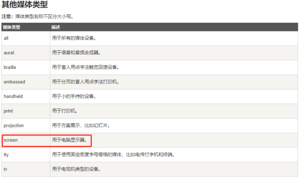
1.2 查询条件
|
max-width:999px; 最大宽度（当设备小于或等于999px时执行） min-width:999px; 最小宽度（当设备大于或等于999px时执行） |
@media (条件1) and (条件2){
条件1和条件成立执行的CSS样式
}
/*当屏幕尺寸大于或等于1000px，并且 小于或等于1199px*/
@media (min-width: 1000px) and (max-width: 1199px){
body{
background-color: green;
}
}1.3 实际应用案例
实际应用一 判断设备横竖屏：
|
/* 这是匹配横屏的状态，横屏时的css代码 */ @media all and (orientation :landscape){} /* 这是匹配竖屏的状态，竖屏时的css代码 */ @media all and (orientation :portrait){} |
实际应用二 判断设备类型：
|
@media X and (min-width:200px){} X为设备类型》比如print/screen/TV等等 |
实际应用三 判断设备宽高：
|
/* 宽度大于600px小于960之间时，隐藏footer结构 */ @media all and (min-height:640px) and (max-height:960px){ footer{display:none;} } |
1.4 外链式
上述写法代码都写到一个css中这样不利于后期维护和修改所以我们修改为外联式。
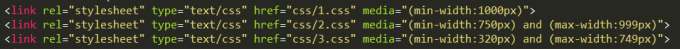
二、前端UI框架-Bootstrap
2.1 简介
Bootstrap是美国Twitter公司的设计师Mark Otto和Jacob Thornton合作基于HTML、CSS、JavaScript 开发的简洁、直观、强悍的前端开发框架，使得 Web 开发更加快捷。 [1] Bootstrap提供了优雅的HTML和CSS规范，它即是由动态CSS语言Less写成。
2.2 使用
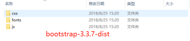
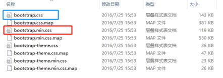
我们目前只需要使用红色框中的css文件，当然我们目前处于学习阶段，那么我们使用蓝色框。
引入到本地
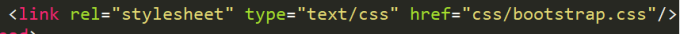
2.3 栅格系统
Bootstrap 提供了一套响应式、移动设备优先的流式栅格系统，随着屏幕或视口（viewport）尺寸的增加，系统会自动分为最多12列。它包含了易于使用的预定义类，还有强大的mixin 用于生成更具语义的布局。
栅格参数：

<div class="container">
<ul class="row">
<!--如果你不再写小屏幕的样式那么他就会自动占满一行-->
<!--<li class="col-lg-3">111</li>
<li class="col-lg-3">111</li>
<li class="col-lg-3">111</li>
<li class="col-lg-3">111</li>-->
<li class="col-lg-3 col-md-4 col-sm-6">111</li>
<li class="col-lg-3 col-md-4 col-sm-6">222</li>
<li class="col-lg-3 col-md-4 col-sm-6">333</li>
<li class="col-lg-3 col-md-4 col-sm-6">444</li>
</ul>
<ol class="row">
<!--列偏移-->
<li class="col-lg-10 col-lg-offset-1"></li>
</ol>
</div>2.4 字体图标
2.4.1 什么是字体图标
字体图标是在 Web 项目中使用的图标字体。
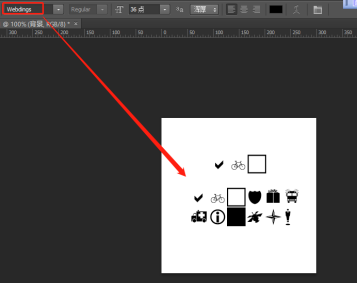
2.4.2 BootStrap字体图标
我们已经在 环境安装 章节下载了 Bootstrap 3.x 版本，并理解了它的目录结构。在 fonts 文件夹内可以找到字体图标，它包含了下列这些文件：
glyphicons-halflings-regular.eot
glyphicons-halflings-regular.svg
glyphicons-halflings-regular.ttf
glyphicons-halflings-regular.woff
相关的 CSS 规则写在 dist 文件夹内的 css 文件夹内的 bootstrap.css 和 bootstrap-min.css 文件上。
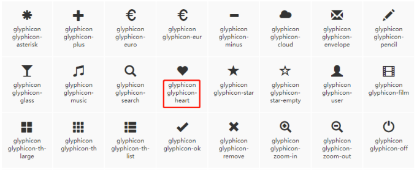
bootstrap字体图标是利用css3的@font-face实现的，既然是字体图标那么就可以像使用字体一样来设置它的颜色、字体大小等···
基本方法：
<i class="基类 字体图标类"></i>
|
<i class="glyphicon glyphicon-volume-off"></i> |
三、 动画库-animation.css
3.1 简介
animate.css 是一个来自国外的 CSS3 动画库，它预设了抖动（shake）、闪烁（flash）、弹跳（bounce）、翻转（flip）、旋转（rotateIn/rotateOut）、淡入淡出（fadeIn/fadeOut）等多达 60 多种动画效果，几乎包含了所有常见的动画效果。
虽然借助 animate.css 能够很方便、快速的制作 CSS3 动画效果，但还是建议看看 animate.css 的代码，也许你能从中学到一些东西。
浏览器兼容：当然是只兼容支持 CSS3 animate 属性的浏览器，他们分别是：IE10+、Firefox、Chrome、Opera、Safari。
3.2 使用
github官网地址：https://daneden.github.io/animate.css/
中文API地址：http://www.dowebok.com/98.html
使用方法：
<link rel="stylesheet" type="text/css" href="css/animate.css"/>
<!--class="基类 效果类"-->
<p class="animated bounceOutLeft">动画库~~~~~~~~~~~~~</p>
<p class="animated rotateInDownRight">动画库**********</p>
<img class="animated rubberBand" src="img/7.png"/>3.3 其他动画库
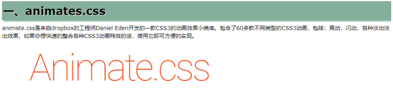
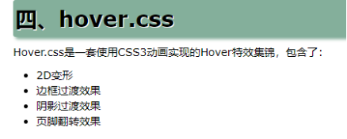
使用方法及其简单，自己可以试着在网上找一找动画库然后进行学习一下。
四、zepto
4.1简介
中文手册：http://www.css88.com/doc/zeptojs_api/
Zepto是一个轻量级的针对现代高级浏览器的JavaScript库， 它与jquery有着类似的api。 如果你会用jquery，那么你也会用zepto。
阉割版的jQuery，比jQuery要强大。
zepto的哲学：只针对高级浏览器，不针对IE6789，兼容IE10以上的浏览器；也就是说zepto中少了很多解决兼容性的代码，有人统计过jQuery处理兼容性代码占50%。
zepto的目标不是覆盖100%的jQuery的API，但是也提供了必要的API。目标创建小的JS库，让用户可以非常快的下载。
语法和jQuery基本一样，甚至于函数的名字都和jQuery一样。
4.2选择器
jQuer拓展的一些选择器，zepto一律不支持，:eq()、:lt()、:gt()、:first、:last、:odd、:even都不支持。
|
$('div:first') $('div:last') $('div:odd) $('div:even') $('div:eq(3)') $('div:lt(3)') $('div:gt(3)') |
CSS3的选择器zepto统统支持。
|
$('div:first-of-type') $('div:nth-of-type(odd)') $('div:not()') |
也就是说，zepto的$()函数的底层原理，就是querySelectorAll()。querySelectorAll()支持的写法，zepto都支持。
zepto不需要兼容低版本浏览器。
IE6、7不支持getEmentsByClassName()，jQuery就是玩命的用正则表达式去模拟支持。
所以zepto就是阉割版的jQuery，但是阉割的部分是jQuery中的兼容性部分，所以变得更精简。
4.3常用方法、属性
支持html()方法
|
$('div:first-of-type').html('1111'); |
节点选择器：
|
$('p:first-child').parent('h1').siblings().html('222'); |
位置：
|
$('div:nth-of-type(4)').offset().top |
加类、删类：
|
$('div').addClass('cur'); $('div').eq(0).removeClass('cur'); |
DOM操作：
|
$('<span></span>').appendTo('div') |
jQuery中常见的函数，zepto都有，没有什么变化。
4.4事件
原生事件都支持。
|
$('div').eq(0).click(function(){ alert(1) }); $('div').eq(1).on('click',function(){ $(this).css('background','red') }); |
4.5动画模块
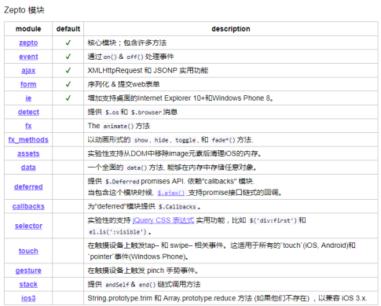
zepto为方便使用者的包达到最大限度的精简，就是让用户自由的选择自己的功能。
模块的安装很简单，就是把模块的代码，复制到原来代码的后面。
$('div').eq(1).animate({'left':1000},1000,'cubic-bezier(0.15,0.33,1,1)',function(){
$(this).css('background-color','blue');
});zepto的动画实现原理是过渡，不是定时器，zepto源码中没有setInterval函数，所以zepto实现的动画，不抖动、时间精确。正是是因为机理是CSS3过渡，所以zepto的animate函数能实现背景颜色动画、背景定位动画、transform动画。而这些jQuery都不支持。
哲学复习一下：
|
1 jQuery：兼容所有浏览器，选择器元素方便，DOM操作也方便，动画也方便。 2 jQuery2.x和3.x：不兼容IE678，也是轻量级的jQuery，只精简$()函数，也开始querySelectorAll，减少了正则表达式的使用。但是里面的动画还是定时器。 3 zepto：jQuery的阉割版，但是不兼容所有浏览器，选择器是querySelectorAll，动画是过渡实现，能够完成3D内所有的动画，只针对移动端使用。 |
4.6模块modules
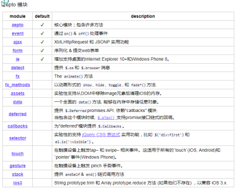
zepto是模块化开发，要使用动画函数animate必须引入模块。
zepto把所有功能都拆分为一个个模块，按需拼凑即可。
zepto不支持jQuery风格的动画队列：
|
$('div').animate({'left':1000},500); $('div').animate({'top':500},500); |
必须用回调函数：
$('div').animate({'left':1000},500,function(){
$(this).animate({'top':500},500,function(){
$(this).animate({'left':0},500,function(){
$(this).animate({'top':0},500);
});
});
});动画的配套不完善。
stop()、is()、delay函数支持的不好。
但是delay有办法支持。
|
$('div').animate({'left':1000},{'duration':1000,'delay':1000}); |
新创建的元素能够立即开始动画。
|
$('<div></div>').appendTo('body').animate({'transform':'rotate(360deg)'},1000); |
动画完成，过渡会立即去掉，但是css函数使用的时候，我们不能确定此元素当前在不在过渡，所以为了安全还是手动去掉过渡。
|
$('input').eq(0).click(function(){ $('div').css({'transition':'none','left':1000}); }); |
五、velocity插件
Velocity 是一个简单易用、高性能、功能丰富的轻量级JS动画库。它能和 jQuery 完美协作，并和$.animate()有相同的 API， 但它不依赖 jQuery，可单独使用。 Velocity 不仅包含了 $.animate() 的全部功能， 还拥有：颜色动画、转换动画(transforms)、循环、缓动、SVG 动画、和 滚动动画 等特色功能。
它比 $.animate() 更快更流畅，性能甚至高于 CSS3 animation， 是 jQuery 和 CSS3 transition 的最佳组合，它支持所有现代浏览器，最低可兼容到 IE8 和 Android 2.3。
Velocity 目前已被数以千计的公司使用在自己的项目中，包括 WhatsApp, Tumblr, Windows, Samsung, Uber 等，这里 Libscore.com 统计了哪些站点正使用 velocity.js。
中文网站：http://www.mrfront.com/docs/velocity.js/index.html
5.1 Velocity 不依赖 jQuery
// console.log(document.querySelector('.box'))
// console.log(document.querySelectorAll('.box p'))
var oBox = document.querySelector('.box1');
//Velocity.js 可以在不引入 jQuery 的情况下单独使用。如果 你需要大部分动画效果能兼容 IE8，就必须引入 jQuery 1×。 它也可以和
Zepto 一起使用，写法和 jQuery 一样：
//Velocity(oBox,{width:200},1000);
// 使用 jQuery 或 Zepto 时
$(".box").velocity({width: 200},{duration: 1000});
5.2 Arguments 参数
$('.box').velocity({
width: "500px", // 动画属性 宽度到 "500px" 的动画
height:"300px"
}, {
/* Velocity 动画配置项的默认值 */
duration: 1000, // 动画执行时间
easing: "linear", // 缓动效果
queue: "", // 队列
begin: function(){console.log('动画开始的函数')}, // 动画开始时的回调函数
progress: undefined, // 动画执行中的回调函数（该函数会随着动画执行被不断触发）
complete: function(){console.log('动画结束的函数')}, // 动画结束时的回调函数
display: 'none', // 动画结束时设置元素的 css display 属性
visibility: undefined, // 动画结束时设置元素的 css visibility 属性
//loop: true, // 循环
delay: 1000, // 延迟
mobileHA: true // 移动端硬件加速（默认开启）
});
5.3 Chaining链式动画
|
//先执行宽度变为75px的动画，等前面的宽度动画结束后，再执行高度变为0的动画 $("div").velocity({width: 750}).velocity({ height: 200 }); |
5.4 loop选项可以制作多次动画
|
$("div").velocity({"rotateX" : 30},{duration:1000,loop: 2 }); |
5.4 Easing 缓动效果
jQuery UI 的缓动关键字（预定义在 Velocity 源码中）：
CSS3 贝塞尔曲线：
/* 标准写法 */
$element.velocity({ width: 50 }, { easing: "easeInSine" });
/* 或 */
$element.velocity({ width: 50 }, "easeInSine");
/* jQuery UI easings */
$element.velocity({ width: 50 }, "easeInSine");
/* CSS3 easings */
$element.velocity({ width: 50 }, "ease-in");
/* 贝塞尔曲线 */
$element.velocity({ width: 50 }, [ 0.17, 0.67, 0.83, 0.67 ]);
/* 弹簧物理 */
$element.velocity({ width: 50 }, [ 250, 15 ]);
/* step easing */
$element.velocity({ width: 50 }, [ 8 ]);5.5缓动可应用于单个属性
$element.velocity({
borderBottomWidth: [ "2px", "spring" ], // border-bottom 使用 "spring"
width: [ "100px", [ 250, 15 ] ], // width 使用 spring physics
height: "100px"
}, {
easing: "easeInSine" // 默认所有属性使用 "easeInSine"
});
5.6 Complete回调函数
complete为动画结束时的回调函数，在无限循环模式下（设置loop: true） 该回调函数将不会执行，但是有规定次数的循环模式下（比如设置设置loop: 3） 该回调函数 将只会在最后一次循环结束后 执行一次。
$element.velocity({opacity: 0}, {
complete: function(elements) { console.log(elements); }
});
5.7滚动浏览器内容到目标元素的位置
|
/* 回顶动画，滚动浏览器内容到 <body> 的顶部 */ $("body").velocity("scroll", { duration: 500, easing: "easeOutQuart" }); |
5.8 Stop 停止当前动画
"stop"指令，可以使当前正在执行的动画立即停止，类似 jQuery 的$.stop()方法
$element.velocity("stop"); // 停止正在执行的 $element 元素的动画
$("div").stop(); //停止当前动画，进入下一个动画
$("div").stop(true); //立即停止
设置stop: true, 可以停止并清空当前正在执行的整个动画队列
$element
.velocity({ width: 100 }, 1000)
.velocity({ height: 200 }, 1000);
// 如果元素正在执行 width 动画，点击 $("#button") 将立即停止当前动画
// 并移除和跳过将要执行的 height 动画队列
$("#button").on("click", function() {
$element.velocity("stop", true);
});
5.9 Reverse 使动画反向执行
"reverse"指令使动画反向执行，就像让一部电影倒着播放。 Reverse 默认会继承之前动画的配置选项（比如duration,easing等）， 但也可以重新设置：
|
$element.velocity({ left: 200 }, { duration: 500 }).velocity("reverse", { duration: 2000 }); |
5.10 Feature 特色 Transforms
Velocity 支持2D/3D变换动画， 比如translate, scale, rotate, skew等。
可以进行变形动画，注意不能写transform属性，而是应该散着写：
$(".box").velocity({
translateX: 200,
translateY: "150px",
translateZ: "200px",
scale: 0.5,
scaleX: 0.5,
scaleY: 0.5,
rotate: 45,
rotateX: "45deg",
rotateY: "45deg",
rotateZ: "45deg",
skewX: "30deg",
skewY: "30deg"
}, { duration: 500 })
5.11动画嵌套
$('div').eq(0).velocity({ translateX: 100 }, 1000, function() {
$('div').eq(1).velocity({ translateY: 200 }, 1000, function() {
$('div').eq(2).velocity({ translateY: 200,width: 300 }, 1000);
});
});
//如何解决上面的问题？我们直接用$.Velocity.RunSequence()对上面代码进行重写：
//e：element - 表示元素
//p：properties - 属性集
//o：options - 配置选项
// 将嵌套动画序列储存到一个数组里，很清晰的显示了它们的执行顺序
var mySequence = [
{ e: $('div').eq(0), p: { translateX: 100 }, o: { duration: 1000 } },
{ e: $('div').eq(1), p: { translateY: 200 }, o: { duration: 1000 } },
{ e: $('div').eq(2), p: { translateY: 300,width: 300 }, o: { duration: 1000 } }
];
// 调用这个自定义的序列名称 还可以在其他地方复用
$.Velocity.RunSequence(mySequence);
注意：使用RunSequence()方法需要引入velocity.ui.js插件包
兼容策略主要有两点（面试常考，建议背诵）
（1）平稳退化（优雅降级）：
首先使用最新的技术面向高级浏览器构建最强的功能及用户体验，然后针对低级的浏览器进行限制，逐步衰减那些无法被支持的功能及体验。使用平稳退化技术时，你必须首先完整的实现了网站，其中包括所有的功能和特效。 然后再为那些无法支持所有功能的浏览器增加候选方案，使之在旧市的浏览器上可以以某种形式降级体验却不至于完全失效。
（2）渐进增强
渐进增强的概念就是，指从最基本的可用性出发，在保证站点页面在低级浏览器中的可用性和可访问性的基础上，逐步增强功能及提高用户体验。
我们应该先让网站能够正常工作于尽可能旧的浏览器上，然后不断为它在新型浏览器上实现更多的增强和改进。随着时间的推移，当越来越多的人开始升级浏览器而浏览器本身的支持度也不断提升时，就会有越来越多的人体验到这些增强和改进，它持续有效的使网站越来越好，只要一次实现，它就让网站的体验与时俱进。
平稳退化就是渴着牛逼的技术来，然后给低级浏览器“找补”解决方法；
渐进增强就是渴着低级浏览器来，然后给高级浏览器加点“小甜点”。
他们的哲学都是一样的，就是高级浏览器看更牛逼的特效，低级浏览器保证基本浏览效果。但是出发点不一样，渐进增强需要你花更细腻的心思，不能撒丫子一个劲高级技术猛怼。
.transition { /*渐进增强写法*/
-webkit-transition: all .5s;
-moz-transition: all .5s;
-o-transition: all .5s;
transition: all .5s;
}
.transition { /*优雅降级写法*/
transition: all .5s;
-o-transition: all .5s;
-moz-transition: all .5s;
-webkit-transition: all .5s;
}